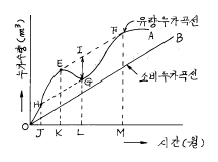
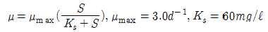
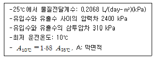
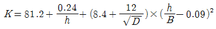
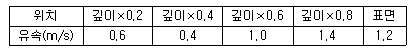
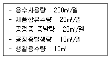

수질환경기사 (2003-05-25 기출문제)
1과목: 수질오염개론
1. 해수의 특징에 관한 설명으로 틀린 것은?
- 해수의 Mg/Ca 농도비는 3 - 4 정도로 담수에 비하여 매우 크다.
- 해수는 강전해질로서 1L당 35000ppm의 염분을 함유한다.
- 해수내 전체질소 중 70% 정도는 암모니아성질소, 유기질소 형태이다.
- 해수의 pH는 약 8.2 로서 약알칼리성을 가진다.
(정답률: 알수없음)

2. 글루코스(C6H12O6) 100mg/L 인 용액을 호기성 처리할 때 이론적으로 필요한 질소량(mg/L)은? (단, K1(밑이 10)= 0.1/day, BOD5 : N = 100 : 5 BODU = THOD로 가정함)
- 약 3.1
- 약 3.4
- 약 3.7
- 약 3.9
(정답률: 62%)
3. 호수에 부하되는 인산량을 적용하여 대상호수의 영양상태를 평가, 예측하는 모델 중 호수내의 인의 물질수지 관계식을 이용하여 평가하는 방법으로 가장 널리 이용되는 것은?
- Vollenweider model
- Streeter-Phelps model
- 2차원 POM
- ISC model
(정답률: 55%)
4. 생태계의 질소순환에 관한 내용과 가장 거리가 먼 것은?
- 대기의 질소는 방전작용과 질소고정세균, 조류 특히 남조류에 의하여 끊임없이 제거된다.
- 아질산균속은 호기성 하에서 암모니아를 아질산염으로 변화시키고 그 산화로 부터 필요한 에너지를 얻는다.
- 동물이나 인간은 대기나 무기물 중의 질소를 이용하여 단백질을 만들어 낼 수 없다.
- 소변속 질소는 주로 요소로서 효소 urease에 의하여 질산성 질소로 신속히 변환된다.
(정답률: 55%)
5. 하수관거내에서 황화수소가 발생할 수 있는 이유를 가장 정확히 설명한 것은?
- 미생물이 하수내의 용존산소를 이용하여 황산염을 산화시키기 때문이다.
- 하수내의 단백질이 용존산소에 의하여 산화되기 때문이다.
- 하수관거내에 침전된 유기물이 호기성 상태에서 황산염으로 환원되기 때문이다.
- 미생물이 혐기성 상태에서 하수내의 황산염을 환원시키기 때문이다.
(정답률: 58%)
6. 1g의 Ca(OH)2를 충분한 양의 Ca(HCO3)2와 반응시키면 CaCO3는 얼마나 생성되는가? (단, Ca 원자량 :40 )
- 1.3g
- 1.8g
- 2.7g
- 3.4g
(정답률: 70%)
7. 50℃에서 순수한 물 1L의 몰농도(mole/L)는? (단, 50℃의 물의 밀도는 0.9881kg/L)
- 33.6
- 54.9
- 98.8
- 109.8
(정답률: 알수없음)
8. 황조류로 엽록소 a, c와 크산토필의 색소를 가지고 있고 세포벽이 형태상 독특한 단세포 조류이며, 찬물 속에서도 잘자라 북극지방에서나 겨울철에 번성하는 것을 발견할 수 있는 것은?
- 녹조류
- 갈조류
- 규조류
- 쌍편모조류
(정답률: 39%)
9. 다음은 하천의 자정작용에 관한 설명이다. 이중 잘못 설명된 것은?
- 생물학적 자정작용인 혐기성분해는 중간 화합물이 휘발성이므로 유해한 경우가 많으며 호기성분해에 비하여 장시간이 요구된다.
- 자정작용중 가장 큰 비중을 차지하는 것은 생물학적 작용이라할 수 있다.
- 자정계수는 탈산소계수/재폭기계수를 뜻한다.
- 화학적 자정작용인 응집작용은 흡수된 산소에 의해 오염물질이 분해될 때 발생되는 탄산가스가 물의 pH를 증가시켜 수산화물의 생성을 촉진시키므로 용해 되어 있는 철이나 망간 등을 침전시킨다.
(정답률: 55%)
10. 호수의 영양상태를 평가하기 위해 사용되는 지표(변수)와 가장 거리가 먼 것은?
- SD(투명도)
- 전도율
- 1차생산성
- BOD
(정답률: 25%)
11. 다음 지하수의 특성에 대한 설명 중 잘못된 것은?
- 지하수는 국지적인 환경조건의 영향을 크게 받는다.
- 비교적 얕은 지하수의 염분농도는 하천수 보다 평균 30% 이상 큰 값을 나타낸다.
- 지하수에 포함된 유기물에 대한 미생물의 분해 작용은 거의 발생하지 않는다.
- 지하수는 토양수내 유기물질 분해에 따른 탄산가스의 발생과 약산성의 빗물로 인하여 광물질이 용해되어 경도가 높다.
(정답률: 알수없음)
12. pH4가 되는 CH3COOH 와 CH3COOK 의 완충액을 만들려면 CH3COOH 와 CH3COOK 의 혼합비율은? (단, KHAC=1.8×10-5 )
- CH3COOH : CH3COOK = 1 : 2.8
- CH3COOH : CH3COOK = 1 : 5.6
- CH3COOH : CH3COOK = 2.8 : 1
- CH3COOH : CH3COOK = 5.6 : 1
(정답률: 알수없음)
13. 평균 유속이 5m/min인 하천의 상류지점A의 BOD가 6 ㎎/ℓ이고, 상류지점A로부터 600m의 하류지점에서 채취한 시료의 BOD가 5 ㎎/ℓ 이었다면, 이 하천의 탈산소계수(k1 : 밑 수 10, BOD 제거속도계수)는? (단, 일차반응 기준)
- 약 0.85/d
- 약 0.95/d
- 약 1.⑤/d
- 약 1.15/d
(정답률: 37%)
14. 다음은 이상적인 완전혼합반응조의 혼합정도를 나타낸 것이다. 틀린 것은?
- 분산 = 1
- Morrill지수 = 값이 클수록
- 분산수 = 1
- 지체시간 = 0
(정답률: 62%)
15. 물의 물리적 성질에 관한 설명으로 틀린 것은?
- 비열은 1g의 물질을 14.5℃-15.5℃까지 1℃ 올리는데 필요한 열량으로 물은 유사한 분자량을 갖는 다른 화합물보다 비열이 매우 큰 특성이 있다.
- 물의 점도는 물분자 상호간의 인력 때문에 생기게 되며 온도가 높아짐에 따라 작아진다.
- 물은 비압축성이며 다른 액체 상태의 물질과는 달리 약 4℃일 때 밀도가 최대(1000kg/m3)가 된다.
- 물의 동점도는 절대점도를 밀도로 나눈 값으로 poise, g/cm · s 등의 단위로 나타낸다.
(정답률: 알수없음)
16. Ca2+의 농도가 5.24× 10-4 mol/ℓ 인 용액내에서 존재할 수 있는 불소이온(F-)의 농도( mol/ℓ )는? (단, CaF2의 용해도적은 3.95× 10-11이다)
- 약 5.50 × 10-4
- 약 5.50 × 10-8
- 약 2.75 × 10-4
- 약 2.75 × 10-8
(정답률: 54%)
17. 다음 중 환원상태가 되면 가장 먼저 반응이 일어나는 것은? (단, ORP값 기준)
- SO42- → S2-
- NO2- → NH3
- Fe3+ → Fe2+
- NO3- → NO2-
(정답률: 50%)
18. 어느 시료의 대장균수가 5,000/㎖라면 대장균수가 10/㎖가 될 때까지 소요되는 시간은? (단, 일차반응기준, 대장균의 반감기는 1시간이다)
- 약 4hrs
- 약 6hrs
- 약 9hrs
- 약 14hrs
(정답률: 69%)
19. 하천에 하수 등 유기성 오수의 유입으로 인한 변화상태를 나타낸 Whipple의 4지대 중 용존산소가 포화될 정도로 증가하고 아질산염 이나 질산염의 농도 증가가 현저한 지대는?
- 분해지대
- 활발한 분해지대
- 회복지대
- 정수지대
(정답률: 60%)
20. 다음 수질을 가진 농업용수의 SAR값은? (단, Na+ = 1,150 mg/ℓ , PO43- = 1,500 mg/ℓ , Cl- = 108mg/ℓ , Ca++ = 600 mg/ℓ , Mg++ = 240 mg/ℓ , NH3-N =380 mg/ℓ , Na 원자량:23, P 원자량:31, Cl 원자량:35.5, Ca 원자량:40, Mg 원자량:24, N원자량:14)
- 10
- 15
- 20
- 30
(정답률: 60%)
2과목: 상하수도계획
21. 하수의 소규모관거시설에 관한 설명으로 틀린 것은?
- 계획오수량은 계획시간최대오수량으로 한다.
- 오수관거는 계획오수량에 대해 200%의 여유를 두는 것으로 한다.
- 오수관거의 최소 흙두께는 원칙적으로 1m로 한다.
- 관의 단면형상은 원칙적으로 원형,직사각형 또는 계란형으로 한다.
(정답률: 37%)
22. 정수된 물을 배수하기위한 배수관에 최대동수압에 대한 내용으로 가장 적절한 것은?
- 가능한 한 4kg/cm2 이내로 하는 것이 타당하다.
- 가능한 한 5kg/cm2 이내로 하는 것이 타당하다.
- 가능한 한 6kg/cm2 이내로 하는 것이 타당하다.
- 가능한 한 8kg/cm2 이내로 하는 것이 타당하다.
(정답률: 알수없음)
23. 하수관로의 최소 관경으로 옳은 것은 ?
- 오수관거에서는 350㎜, 합류관거에서는 500㎜
- 오수관거에서는 300㎜, 합류관거에서는 400㎜
- 오수관거에서는 250㎜, 합류관거에서는 300㎜
- 오수관거에서는 200㎜, 합류관거에서는 250㎜
(정답률: 25%)
24. 하수 고도처리를 위한 처리시설의 계획하수량 기준으로 적절한 것은? (단, 합류식 하수도 )
- 계획시간최대오수량
- 우천시계획오수량
- 계획1일최대오수량
- 대상수량
(정답률: 알수없음)
25. 정수장 처리대상물질이 트리할로메탄인 경우 주로 사용하는 처리방법과 가장 거리가 먼 것은?
- 포기
- 중간염소처리
- 활성탄처리
- 결합염소처리
(정답률: 알수없음)
26. 계획오수량을 정할 때 고려해야 할 사항 중 알맞지 않은 것은?
- 합류식에서 우천시 계획오수량은 원칙적으로 계획 시간 최대오수량의 3배 이상으로 한다.
- 계획 1일 평균오수량은 계획 1일 최대오수량의 70-80%를 표준으로 한다.
- 지하수량은 1인 1일 최대오수량의 10-20%로 한다.
- 계획 1일 최대오수량은 1인 1일 최대오수량에 계획 인구를 곱한 것이다.
(정답률: 39%)
27. 침사지에 관한 설명으로 틀린 것은?
- 저부경사는 보통 1/100-2/100로 한다.
- 수심은 유효수심에 모래퇴적부의 깊이를 더한 것으로 한다.
- 체류시간은 30-60초를 표준으로 한다.
- 표면부하율은 180-360m3/m2-일을 표준으로 한다.
(정답률: 34%)
28. 호기성 소화조에 관한 설명으로 알맞는 것은?
- 수밀성의 구조로 한다.
- 소화조의 수는 최소한 4조 이상으로 한다.
- 직사각형인 경우 바닥의 기울기는 10-25% 정도 되게한다.
- 측심은 2m정도로 한다.
(정답률: 14%)
29. 저수댐의 위치에 관한 설명으로 틀린 것은?
- 댐 지점 및 저수지의 지질이 양호하여야 한다.
- 가장 작은 댐의 크기로서 필요한 양의 물을 저수할 수 있어야 한다.
- 유역면적이 작고 수원보호상 유리한 지형이어야 한다.
- 저수지용지 내에 보상해야 할 대상물이 적어야 한다.
(정답률: 34%)
30. 다음은 급수용 저수지의 용량 결정을 위한 유출량 누가 곡선(run-off mass curve)이다. 갈수기 부족량을 보충하기 위하여 저수하기 시작하여야 할 시기는 어느 지점 부터인가? (단,EF와 HG는 각각 OB선에 평행한다)

- J 지점
- K 지점
- L 지점
- M 지점
(정답률: 알수없음)
31. 정수(淨水)를 위한 급속여과지에 관한 설명으로 틀린 것은?
- 여과면적은 계획정수량을 여과속도로 나누어 구한다.
- 1지의 여과면적은 150m2이하로 한다.
- 여과사의 유효경은 1.0-2.0mm범위 이내이어야 한다.
- 여과속도는 120-150m/일을 표준으로 한다.
(정답률: 50%)
32. 지하수(복류수 포함)의 취수시설인 집수매거에 관한 설명 중 옳지 않은 것은?
- 집수매거의 방향은 통상 복류수의 흐름방향에 직각이 되도록 한다.
- 집수공의 유입 유속은 3cm/sec 이하로 하고 집수매거는 1/500 이하의 완만한 경사를 가져야 한다.
- 매설깊이는 5m를 표준으로 하나 지질이나 지층의 제약으로 부득이한 경우에는 그 이하로 할 수도 있다.
- 집수매거의 집수구멍의 직경은 2-4mm로 하며 그 수는 관거 표면적 1m2당 50-100개소 이상으로 한다.
(정답률: 27%)
33. 하수처리장의 이차침전지에 관한 설명으로 알맞지 않는 것은?
- 직사각형인 경우 길이와 폭의 비는 3:1-5:1 정도로 하며 덮개를 설치할 경우는 8:1 정도까지 할 수 있다.
- 슬러지제거기를 설치하는 경우 원형 또는 정사각형인 경우에는 바닥기울기를 1/20-1/10으로 한다.
- 표면부하율은 계획1일최대오수량에 대하여 40-50m3/m2-일로 한다.
- 고형물부하율은 95-145kg/m2-일로 한다.
(정답률: 18%)
34. 하천표류수 취수시설 중 취수문에 관한 설명으로 틀린 것은?
- 보통 소량취수에 이용된다. 그러나 취수둑에 비해서는 대량취수에도 쓰인다.
- 유심이 안정된 하천에 적합하다.
- 토사, 부유물의 유입방지가 용이하다.
- 갈수시 일정수심확보가 안되면 취수가 불가능하다.
(정답률: 32%)
35. 지름 2,000mm의 원심력 철근 콘크리트관이 포설되어 있다. 만관으로 흐를 때의 유량을 Manning 공식으로 계산하면? (단, 조도계수 n = 0.015, 동수구배 I = 0.001 )
- 4.17m3/s
- 4.45m3/s
- 4.67m3/s
- 4.95m3/s
(정답률: 16%)
36. 도수관,송수관에 설치하는 제수밸브(실)에 관한 설명으로 틀린 것은?
- 수압이 높은 장소로서 관경이 400mm이상의 제수밸브에는 부제수밸브를 설치하여야 한다.
- 관경 800mm 이상의 제수밸브실에는 밸브 전단에 맨홀을 설치함이 좋다.
- 제수밸브실은 도로의 종류별, 배관의 구경별 및 현장 조건에 따라 소형,중형,대형으로 구분하여 설치한다.
- 제수밸브실에는 이상수압 발생시 즉시 감지하기 위한 수압계의 설치등 배수 및 점검을 위한 설비를 갖추어야 한다.
(정답률: 40%)
37. 오수관거 계획의 기준이 되는 것은?
- 계획시간 최대오수량
- 계획1일 최대오수량
- 계획1일 평균오수량
- 우천시 계획오수량
(정답률: 28%)
38. 강우강도 I=[3970/(t+31)]㎜/hr, 유역면적 4㎞2, 유입시간 5분, 유출계수 0.9, 길이 1㎞ 하수관내 유속 40m/min인 경우 하수관 하단의 최대 우수량은? (단, 합리식 적용)
- 53 m3/sec
- 65 m3/sec
- 72 m3/sec
- 80 m3/sec
(정답률: 알수없음)
39. 1분당 300m3의 물을 150m 양정(전양정)할 때 최고 효율점에 달하는 펌프가 있다. 이 때의 회전수가 495rpm이라면이 펌프의 비속도(비교회전도)는?
- 0.1
- 1.1
- 110
- 200
(정답률: 19%)
40. 직경이 600mm(외경)인 하수관을 매설하려고 한다. 매설지점의 표토는 젖은 진흙으로서 흙의 밀도가 1.85t/m3이고 흙의 종류와 관의 깊이에 따라 결정되는 계수 C1=1.24이다. 이때 매설관이 받는 하중을 Marston의 방법에 의하여 계산하면? (단, 도랑폭은 관거외경 1.5배 + 0.3m 이다)
- 3.30t/m
- 3.75t/m
- 5.65t/m
- 7.25t/m
(정답률: 32%)
3과목: 수질오염방지기술
41. 상향류 혐기성 슬러지상에 관하여 장점으로 적절치 못한 것은?
- 미생물 체류시간을 적절히 조절하면 저농도 유기성 폐수의 처리도 가능하다.
- 고형물의 농도가 높은 경우라도 고형물 및 미생물 유실의 우려가 적다.
- 기계적인 교반이나 여재가 필요없기 때문에 비용이 적게 든다.
- 고액 및 기액분리장치를 제외하면 전체적으로 구조가 간단하다.
(정답률: 19%)
42. 배플(baffle)이 달린 수로식 플록 형성(flocculation) 시스템에서 20개의 배플(baffle)이 있고, 총수두손실은 0.325m가 발생한다. 각 배플을 통과할 때의 수두손실 계수가 1.0일 때 통과 필요유속은?
- 0.565m/sec
- 0.648m/sec
- 0.762m/sec
- 0.964m/sec
(정답률: 12%)
43. 도시하수 10000m3/d를 처리하는 폐수처리장이 있다. 1차 침전조 유출수의 BOD가 150mg/ℓ 이고 생물학적 처리 후 최종 유출수의 BOD 농도가 5mg/ℓ 로 설계되었다. 이 폐수 에 대해 완전혼합 반응기를 이용하여 실험을 행한 결과, 미생물 증식계수 Y=0.5, 자산화계수 Kd=0.⑤d-1을 얻을 수 있었다. 포기조의 MLSS농도가 3000mg/ℓ 이고 침전슬러지 농도가 10000mg/ℓ , 슬러지 일령 θ c=10d 라면 매일 폐기 해야 되는 폐슬러지의 량(kg/day)은?
- 793
- 643
- 543
- 483
(정답률: 16%)
44. 어떤 물질이 1차 반응으로 분해되며, 속도상수는 0.⑤d-1 이다. 유량이 400m3/d 일 때, 이 물질 90%를 제거하는 데 필요한 PFR 부피는?
- 약 15600m3
- 약 17200m3
- 약 18400m3
- 약 21200m3
(정답률: 24%)
45. 어느 종말 처리장에서 30분 침강율: 20%, SVI: 100, 반송슬러지 SS 농도 9,000mg/L의 측정치를 얻었다. 다음중 슬러지 반송율로서 가장 적절한 것은?
- 15%
- 29%
- 38%
- 45%
(정답률: 15%)
46. 생물학적 질소,인 처리공정인 5단계 Bardenpho공법에 관한 설명으로 틀린 것은?
- 폐슬러지내의 인의 농도가 높다.
- 1차 무산소조에서는 탈질화 현상으로 질소 제거가 이루어진다.
- 호기성조에서는 질산화와 인의 방출이 이루어 진다.
- 2차 무산소조에서는 잔류 질산성질소가 제거된다.
(정답률: 32%)
47. CN함유폐수를 화학적 산화에 의해 처리할 경우 단위 처리 조작을 가장 알맞게 연결한 것은?
- 균등조-산화반응조(1,2단계)-중화조-여과조-유출수
- 균등조-환원반응조-산화반응조(1,2단계)-여과조-유출수
- 균등조-중화조-환원반응조-산화반응조(1,2단계)-유출수
- 균등조-산화반응조(1,2단계)-응집조-여과조-유출수
(정답률: 알수없음)
48. 기질과 미생물 혼합물로 채워진 호기성 반응조가 있다. t=0일 때 기질농도(S)는 150㎎/ℓ 이고 미생물의 농도 (X)는 1500㎎/ℓ 이며 생물반응은 일차반응이다. 6시간 동안 폭기한 후 기질농도는 4㎎/ℓ 이고 미생물의 농도는 1590㎎/ℓ 이다. 이 때(t=6hr)의 미생물 성장율(㎎/ℓ -hr)은? (단,

이다)- 약 4㎎/ℓ - hr
- 약 8㎎/ℓ - hr
- 약 12㎎/ℓ - hr
- 약 18㎎/ℓ - hr
(정답률: 8%)
49. 하구의 오염물질 거동을 해석할 때 사용하는 하구수(estuary number)는 다음 중 어느 것인가? (단 u는 유속, L은 특성길이, t는 시간, E는 확산계수, k는 분해상수(반응속도)이다. 단위는 일반적 내용을 준용한다. )
- Lu/E2
- k2t/u
- kE/u2
- ut2/L
(정답률: 알수없음)
50. 역삼투 장치로 하루에 1520m3의 3차처리된 유출수를 탈염시키고자 한다. 요구되는 막면적(m2)은?

- 2778
- 3452
- 4561
- 5556
(정답률: 알수없음)
51. 슬러지 반송계통에서 잉여슬러지를 배출시키는 활성슬러지 공정이 있다. 폭기조 용량이 500m3, 잉여슬러지 배출 량이 25m3/day이다. 반송슬러지의 SS농도는 1%이고 폭기조의 MLSS 농도는 2500 mg/L이다. 이 공정의 평균 미생물 체류시간(MCRT)는? (단, 2차 침전지 유출수 중의 SS는 무시한다.)
- 2 day
- 3 day
- 4 day
- 5 day
(정답률: 알수없음)
52. 급속교반 탱크에 유입되는 폐수를 6평날 터빈 임펠러로 완전 혼합하고자 한다. 임펠러의 직경은 2.0m이고, 깊이 6.0m인 탱크의 바닥으로부터 1.2m높이에서 설치 되었다. 수온 30℃에서 임펠러의 회전속도가 30rpm일 때 동력소비 량은? (단 p = kρ n3D5, 30℃ 액체의 밀도 995.7kg/m3, k=6.3 )
- 약 115 kw
- 약 86 kw
- 약 54 kw
- 약 25 kw
(정답률: 50%)
53. 무기수은계 화합물을 함유한 폐수의 처리방법으로 가장 거리가 먼 것은?
- 황화물 침전법
- 활성탄 흡착법
- 산화분해법
- 이온교환법
(정답률: 18%)
54. [( )이란 독성물질이 수중생물의 아가미와 표피를 통해 생체내에 직접 흡수되는 과정을 말한다.]( )안에 가장 알맞는 내용은?
- Bioconcentration
- Bioaccumulation
- Biomagnification
- Biotransformation
(정답률: 50%)
55. 난분해성 폐수처리에 이용되는 펜톤 시약이란?
- H2O2 + 철염
- 알루미늄염 + 철염
- H2O2 + 알루미늄염
- 철염 + 고분자응집제
(정답률: 19%)
56. 회전생물막접촉기(RBC)에 관한 설명으로 틀린 것은?
- 재순환이 필요없고 유지비가 적게 든다.
- 메디아는 전형적으로 약 40%가 물에 잠긴다.
- 운영변수가 적어 모델링이 간단하고 편리하다.
- 설비는 경량재료로 만든 원판으로 구성되며 1-2rpm의 속도로 회전한다.
(정답률: 30%)
57. 연속회분식 활성슬러지 반응조(SBR)의 장점을 설명한 것 중 틀린 것은?
- 수리학적 과부하에도 MLSS의 누출이 없다.
- 팽화방지를 위한 공정의 변경이 용이하다.
- 설계자료가 다양하며 여분의 반응조가 필요없다.
- 소규모 처리장에 적합하다.
(정답률: 알수없음)
58. 질산염(NO3-) 30 mg/L를 탈질시키는데 소모되는 메탄올(CH3OH)의 양은?
- 10.4 mg/L
- 12.9 mg/L
- 25.8 mg/L
- 74.1 mg/L
(정답률: 알수없음)
59. 용수 및 폐수처리방법 중 이온교환의 주용도와 가장 거리 가 먼 것은?
- 물의 연수화
- 인의 제거
- 암모니아제거
- 폐수의 중금속처리
(정답률: 25%)
60. 일반적인 양이온 교환물질에 있어 가장 일반적인 양이온에 대한 선택성의 순서로 적합한 것은?
- Ni+2 >Ba+2 >Sr+2 >Ca+2 >Pb+2
- Sr+2 >Ca+2 >Ba+2 >Ni+2 >Pb+2
- Ba+2 >Pb+2 >Sr+2 >Ca+2 >Ni+2
- Ca+2 >Pb+2 >Ni+2 >Ba+2 >Sr+2
(정답률: 36%)
4과목: 수질오염공정시험기준
61. 수질환경공정시험방법에 나타나 있는 클로로필 a 양의 단위는?
- mL/ℓ
- mol/g
- 객체수/mL
- mg/m3
(정답률: 20%)
62. 염소이온(Cl-)이 2500mg/ℓ 들어있는 어떤 공장폐수 20㎖를 취해 중크롬산칼륨법에 의한 화학적 산소 요구량을 실험하였다. 황산제이수은 몇 g을 넣는 것이 가장 적절 한가?
- 0.2g
- 0.3g
- 0.4g
- 0.5g
(정답률: 알수없음)
63. 흡광광도법으로 철 측정시 염산히드록실아민용액이 사용 되는 이유는?
- 발색
- 환원
- 농축
- 산화
(정답률: 30%)
64. 공정시험방법상 아연을 흡광광도법으로 정량할 때 사용되는 시약과 가장 거리가 먼 것은?
- 시안화칼륨용액
- 진콘용액
- 초산부틸용액
- 포수클로랄용액
(정답률: 37%)
65. 디페닐카르바지드 흡광광도법에 의한 크롬의 정량에 있어서 철의 영향을 없게 하기 위한 방법으로 가장 적절한것은? (단, 시료중 철이 2.5mg이하로 공존할 경우, 공정방법기준 )
- 디페닐카르바지드 용액을 넣은 직후 5% 피로인산나트륨 10수화물 용액 2mL를 넣어준다.
- 디페닐카르바지드 용액을 넣은 직후 10% 피로인산나트륨 10수화물 용액 4mL를 넣어준다.
- 디페닐카르바지드 용액을 넣기 전에 5% 피로인산나트륨 10수화물 용액 2mL를 넣어준다.
- 디페닐카르바지드 용액을 넣기 전에 10% 피로인산나트륨 10수화물 용액 4mL를 넣어준다.
(정답률: 7%)
66. 가스크로마토그라프법으로 PCB를 정량할 때 다음 사항중 관련이 없는 사항은?
- 전자포획형 검출기
- 컬럼 안지름 2 - 4mm
- 석영제 컬럼
- 질소 운반가스
(정답률: 알수없음)
67. 대장균군의 막여과 시험방법에 대한 특징이 아닌 것은?
- 다량의 시료를 여과하므로 신뢰성이 있는 결과가 도출된다.
- 실험기간이 최적확수 시험법에 비해 1/4 정도가 된다.
- 대장균군의 계산은 다음과 같이 한다. 대장균군수/100ℓ=생성된 집락수×100/여과한 시료량. mℓ
- 대장균군의 정성시험은 추정, 확정, 완전의 순서로 이루어진다.
(정답률: 40%)
68. 윙클러 방법으로 용존 산소를 정량시 0.01N - Na2S2O3용액 1㎖가 소요되었을 때 이것 1㎖는 산소 몇 ㎎에 상당 하겠는가?
- 0.08㎎
- 0.16㎎
- 0.2㎎
- 0.8㎎
(정답률: 15%)
69. 측정항목과 측정방법이 서로 관계가 없는 것은?
- 질산성질소-염화제일주석환원법
- 아질산성질소-디아조화법
- 암모니아성질소-인도페놀법
- 총질소-카드뮴환원법
(정답률: 0%)
70. 직각 삼각웨어를 사용하여 유량을 측정하고자 한다. 웨어의 수두가 0.18m, 수로의 밑면에서 절단 하부점까지의 높이가 0.64m, 수로의 폭이 0.48m 이라면 이 때 유량 [m3 /h]은? (단,

)- 약 70m3 /h
- 약 78m3 /h
- 약 84m3 /h
- 약 91m3 /h
(정답률: 25%)
71. 원자흡광광도법에서 플레임을 만들 때 연소가스로 공기-아세틸렌를 사용하는 항목이 아닌 것은?
- 카드뮴
- 납
- 수은
- 크롬
(정답률: 29%)
72. 다음 설명 중 잘못된 것은?
- '수욕상 또는 수욕중에서 가열한다'함은 따로 규정이 없는 한 수온 100℃에서 가열함을 뜻한다.
- 액체의 산성,알카리성 또는 중성을 검사할 때는 따로 규정이 없는 한 유리전극에 의한 pH미터로 측정하고 액성을 구체적으로 표시할 때는 pH값을 쓴다.
- '진공'이라 함은 15㎜H20 이하의 진공도를 말한다.
- 분석용 저울은 0.1㎎까지 달 수 있는 것이라야 한다.
(정답률: 알수없음)
73. [ 시안을 흡광광도법으로 정량할 때 ( )에서 에틸렌디아민테트라 초산이나트륨을 넣고 가열 증류하여 시안화물 및 시안착화합물의 대부분을 시안화수소로 유출 시킨다. ] ( )안에 알맞는 내용은?
- pH 2 이하의 산성
- pH 4∼5의 약산성
- pH 7∼8의 중성
- pH 9 이상의 알칼리성
(정답률: 10%)
74. 음이온 계면활성제 정량시험시 측정에 방해를 주는 물질과 가장 거리가 먼 것은?
- 염화물
- 시안화물
- 질산염
- 티오시안산
(정답률: 10%)
75. 0.025N-KMnO4 250mL를 조제하려면 KMnO4몇 g을 취해야 하는가? (단, 원자량: K=39, Mn=55)
- 0.2
- 0.4
- 0.6
- 0.8
(정답률: 34%)
76. 가스 크로마토 그래피의 검출기의 종류와 특징을 알맞게 연결지은 것은?
- FPD - 수소이온화 검출기로 니트로기등을 갖는 친전자성 성분에 감도가 좋다.
- TCD - 인,유황화합물을 선택적으로 검출한다.
- ECD - 유기할로겐화합물, 니트로화합물 및 유기금속 화합물을 선택적으로 검출할 수 있다.
- FID - 수소염이온화 검출기에 알카리토류 금속염의 튜브를 부착한 것으로 유기질소화합물을 선택적으로 검출할 수 있다.
(정답률: 19%)
77. 투명도에 관한 설명으로 적절치 못한 것은?
- 투명도판을 천천히 끌어 올리면서 보이기 시작한 깊이를 0.1m 단위로 읽어 투명도를 측정한다.
- 투명도판은 무게가 약 3kg인 지름 30cm의 백색 원판에 지름 5cm의 구멍 8개가 뚫려 있다.
- 흐름이 있어 줄이 기울어질 경우에는 2kg 정도의 추를 달아서 줄을 세워야 한다.
- 투명도판의 색조차와 광반사능은 투명도에 큰 영향이 있어 더러울 때에는 다시 색칠하여야 한다.
(정답률: 19%)
78. 다음 항목 중 시료를 4℃로 보관해야 하는 방법과 거리가 먼 것은?
- 생물화학적 산소요량
- 부유물질
- 질산성 질소
- 클로로필α
(정답률: 12%)
79. 노말헥산추출물질 분석에 관한 설명으로 틀린 것은?
- 시료를 pH 4이하의 산성으로 하여 노말헥산층에 용해되는 물질을 노말헥산으로 추출한다.
- 폐수 중의 비교적 휘발되지 않는 탄화수소, 탄화수소 유도체, 그리이스유상물질 및 광유류를 함유하고 있는 시료를 측정대상으로 한다.
- 광유류의 양을 시험하고자 할 경우에는 활성규산 마그네슘칼럼으로 우선 광유류를 흡착한 후 추출한다.
- 시료용기는 유리병을 사용하여야 하며 시료 전량을 사용하여 시험한다.
(정답률: 46%)
80. 수심이 3m인 하천에서 유속을 측정하여 다음 자료를 얻었다. 평균유속은?

- 1.2 m/s
- 1.0 m/s
- 0.8 m/s
- 0.6 m/s
(정답률: 18%)
5과목: 수질환경관계법규
81. [ 환경부장관은 상시측정망의 ( )등을 명시한 측정망설치계획을 결정하여 ---- ] ( )안에 내용으로 가장 적절한 것은?
- 측정망의 범위, 방법 및 항목
- 측정망의 위치, 범위 및 구역
- 측정망의 구역, 방법 및 오염도
- 측정망의 구역, 범위 및 항목
(정답률: 28%)
82. 시.도지사등이 환경부장관에게 보고할 사항 중 보고 횟수가 가장 많은 것은? (단, 위임업무보고사항)
- 배출시설의 설치허가,오염물질의 배출상황 검사, 배출시설에 대한 업무처리 현황
- 폐수처리업에 대한 등록, 지도단속실적 및 처리실적 현황
- 환경관리인의 자격별, 업종별 신고상황
- 과징금 징수실적 및 체납처분현황
(정답률: 10%)
83. 수계 영향권별 환경관리지역내 오염원 조사를 위해 시.도지사는 관할 지역안의 오염원등에 대한 조사를 몇 년마다 실시하여야 하는가?
- 1년
- 2년
- 3년
- 5년
(정답률: 10%)
84. 다음의 사업장에서 발생하는 폐수배출량은?

- 260m3/일
- 220m3/일
- 190m3/일
- 160m3/일
(정답률: 0%)
85. 사람의 건강, 재산이나 동식물의 생육에 직접 또는 간접으로 위해를 줄 우려가 있는 수질오염물질로서 환경부령으로 정한 것을 무엇이라 하는가?
- 수질오염물질
- 수질유해물질
- 특정수질유해물질
- 특정수질오염물질
(정답률: 11%)
86. 부과금이 납부의무자의 자본금을 2배이상 초과는 경우로 사업에 현저한 손실로 사업자의 재산에 심한 손실이 있어 정상적인 분할납부가 어렵다고 인정되는 경우 징수유예기간으로 적절한 것은?
- 유예한 날의 다음날부터 2년이내로 한다.
- 유예한 날의 다음날부터 3년이내로 한다.
- 유예한 날의 다음날부터 5년이내로 한다.
- 유예한 날의 다음날부터 7년이내로 한다.
(정답률: 22%)
87. 낚시행위 금지구역의 지정권자는?
- 환경부장관
- 시· 도지사
- 시장· 군수· 구청장
- 해양수산부장관
(정답률: 10%)
88. 호소의 환경기준으로 적절치 못한 것은? (단, 공업용수 3급 기준)
- 부유물질량 20mg/L이하
- 용존산소량 2mg/L이상
- 화학적산소요규량 10mg/L이하
- 수소이온농도(pH) 6.0 - 8.5
(정답률: 20%)
89. 배출시설 및 방지시설의 운영일지 보존기간은?
- 최종 기재일로 부터 6개월
- 최종 기재일로 부터 1년
- 최종 기재일로 부터 2년
- 최종 기재일로 부터 3년
(정답률: 알수없음)
90. 폐수배출부과금에 관한 다음 설명중 타당하지 못한 것은?
- 배출부과금은 초과배출부과금과 기본배출부과금으로 구분하여 부과한다.
- 초과부과금은 배출허용기준의 초과한 경우에 부과 하며 사업장의 규모, 배출허용기준을 초과한 오염물질배출량과 배출농도등에 따라 부과한다.
- 기본부과금은 방류수 수질기준을 초과한 경우에 부과하며 배출허용기준이상으로서 방류수수질기준을 초과한 오염물질배출량과 배출농도등에 따라 부과한다.
- 기본부과금의 부과대상이 되는 오염물질의 종류는 유기물질과 부유물질이다.
(정답률: 19%)
91. 폐수처리업중 폐수재이용업의 등록기준으로 적절한 것은?
- 수질환경산업기사 1인이상
- 1억이상의 자본금 또는 자산
- 10m22이상의 사무실
- 30m2이상의 실험실
(정답률: 32%)
92. 호소수질보전구역을 지정하고자 하는 경우에 고려하여야 할 사항과 가장 거리가 먼 내용은?
- 집수구역안의 토지이용현황 및 장래이용계획
- 집수구역의 환경기초시설 확충계획
- 집수구역안의 상,하수도시설 설치 현황
- 집수구역안의 인구,산업,축산,행정구역등의 개황
(정답률: 10%)
93. 수질환경보전법상 다음 용어의 정의로 알맞지 않는 것은?
- 폐수:물에 액체성 또는 고체성의 수질오염물질이 혼입되어 그대로 사용할 수 없는 물을 말한다.
- 수질오염방지시설:폐수배출시설로부터 배출되는 수질오염물질을 제거하거나 감소시키는 시설로서 환경부령으로 정하는 것을 말한다.
- 상수원호소:상수원보호구역 및 특별대책지역내의 호소중 취수시설이 설치되어 먹는물로 사용되는 호소를 말한다.
- 수면관리자:다른 법령의 규정에 의하여 호소를 관리하는 자를 말한다. 이 경우 동일한 호소를 관리하는 자가 2이상인 경우에는 하천법에 의한 하천의 관리청외의 자가 수면관리자가 된다.
(정답률: 알수없음)
94. 폐수종말처리시설의 유지,관리기준에 따라 처리시설의 관리,운영자가 실시하여야 하는 방류수수질검사의 횟수 기준으로 적정한 것은? (단, 시설의 규모는 1500m3/일 이며 처리시설의 적정 운영을 확인하기 위한 검사이다)
- 2월 1회 이상
- 월 1회 이상
- 월 2회 이상
- 주 1회 이상
(정답률: 64%)
95. 3년 이상 방류수수질기준을 초과하지 아니한 사업자에게 배출부과금 100만원이 부과된 경우 감경받는 금액은?
- 20만원
- 30만원
- 50만원
- 70만원
(정답률: 20%)
96. 폐수배출시설외에 수질오염물질을 배출하는 시설 또는 장소로서 환경부령이 정하는 것(기타수질오염원)의 대상 시설과 규모기준에 관한 내용으로 틀린 것은?
- 자동차폐차장시설: 면적 1000m2 이상
- 수조식 육상양식어업시설: 수조면적 합계 500m2 이상
- 골프장: 면적 30만m2 이상
- 무인자동식 현상,인화,정착시설: 1대 이상
(정답률: 17%)
97. 호소안의 쓰레기 수거,처리에 관한 설명으로 적절치 못한 것은?
- 호소안의 쓰레기 수거 의무자는 수면관리자이다.
- 당해 호소를 관할하는 시장,군수,구청장은 수거된 쓰레기를 운반, 처리하여야 한다.
- 호소안의 쓰레기 운반· 처리에 관한 협약이 체결되지 아니하는 경우 조정권자는 환경부장관이다.
- 수면관리자와 관계 자치단체의 장은 호소안의 쓰레기 수거에 소요되는 비용을 분담하기 위한 협의를 하여야 한다.
(정답률: 5%)
98. 다음중 폐수종말처리시설의 방류수수질기준 중 잘못된 것은? (단, 농공단지 오,폐수종말처리시설 포함)
- BOD 30 이내 ㎎/ℓ
- COD 40 이내 ㎎/ℓ
- SS 20 이내 ㎎/ℓ
- T-N 60 이내 ㎎/ℓ
(정답률: 25%)
99. 조업정지가 공익에 현저한 지장을 초래할 우려가 있다고 인정되는 경우에 조업정지처분에 갈음하여 부과되는 과징금의 최대 금액은?
- 5천만원
- 1억원
- 2억원
- 3억원
(정답률: 알수없음)
100. 배출시설의 설치를 제한할 수 있는 지역의 범위는 누구의 령(令)으로 정하는가?
- 시장,군수,구청장
- 시,도지사
- 환경부장관
- 대통령
(정답률: 알수없음)